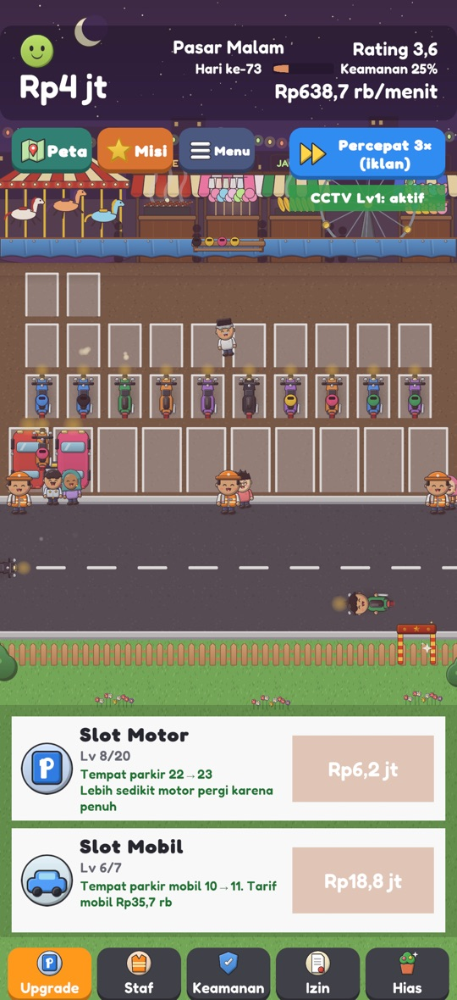
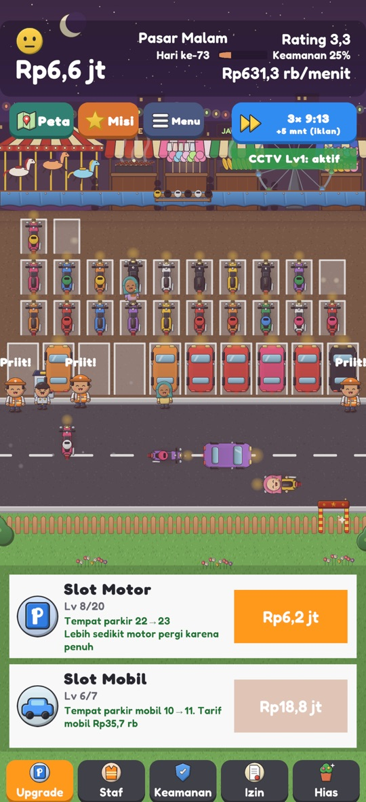

Parkir Bos! Kerajaan Parkir
Game idle tycoon tentang dunia parkir. Mulai dari tiga petak di teras rumah, lalu buka lahan baru: dekat pasar, depan minimarket, terminal bus, pasar malam, mal, sampai alun-alun kota. Uang tetap mengalir walau HP ditutup.
Yang bisa kamu lakukan
Bangun lahan parkir
Tambah slot motor dan mobil, pasang terpal peneduh, dan naikkan tarif.
Rekrut jukir
Jukir menjaga slot dan menagih karcis, bahkan saat kamu tidak bermain.
Lawan para pengacau
Maling helm, preman, jukir liar, sampai calo. Tap mereka sebelum pelangganmu kabur.
Urus surat izin
Lengkapi surat izin dan syaratnya untuk membuka lahan berikutnya.
Tiga babak cerita
Dari kampung ke Distrik Terminal lalu Pusat Kota, dengan tokoh dan masalah yang makin seru.
Buka cabang
Kumpulkan Reputasi Juragan dan perluas kerajaan parkirmu di peta Konohara.
Tangkapan layar


Bantuan dan privasi
Iklan di game ini hanya iklan berhadiah yang kamu pilih sendiri untuk ditonton. Baca kebijakan privasi untuk tahu data apa yang dipakai. Pertanyaan dan laporan bug: estehtawar.games@gmail.com.